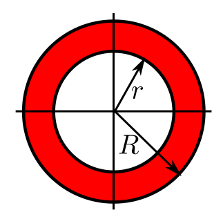

EXERCISE 1: If $X$ has a density of the form $f(x) \propto \exp(a+b+cx^2),~~x\in{\mathbb R},$ then find $E(X)$ and $V(X)$ in terms of $a,b,c.$ Also find median of $X.$
EXERCISE 2: Construct $(X,Y)$ such that marginally $X$ and $Y$ have $N(0,1)$ distribution, but $(X,Y)$ is not bivariate normal.
EXERCISE 3: Suppose that you have a software to generate IID replications from $N(0,1).$ Let $\mu\in{\mathbb R}^n$ and $\Sigma$ be any $n\times n$ PD matrix. Suggest how you can use the software to generate a single observation from $N_n(\mu,\Sigma).$ Assume that the software can perform matrix operations.
EXERCISE 4: If $X,Y$ are IID $N(0,1)$, then what is the chance that the random point $(X,Y)$ lies in the annulus shown below?
|  |
|---|
EXERCISE 5: Let $X_1,...,X_n$ be a random sample from $N(\mu,\sigma^2)$ for some $\mu\in{\mathbb R}$ and $\sigma^2>0.$ Find $a<b$ such that $P\left(a< \frac{\bar X-\mu}{S/\sqrt{n}} < b\right) = 0.95$ and $b-a$ is the least possible subject to this.
EXERCISE 6:
EXERCISE 7: 
EXERCISE 8: 
EXERCISE 9: 
EXERCISE 10: 
EXERCISE 11: 
EXERCISE 12: 
EXERCISE 13: 
EXERCISE 14: 
EXERCISE 15: